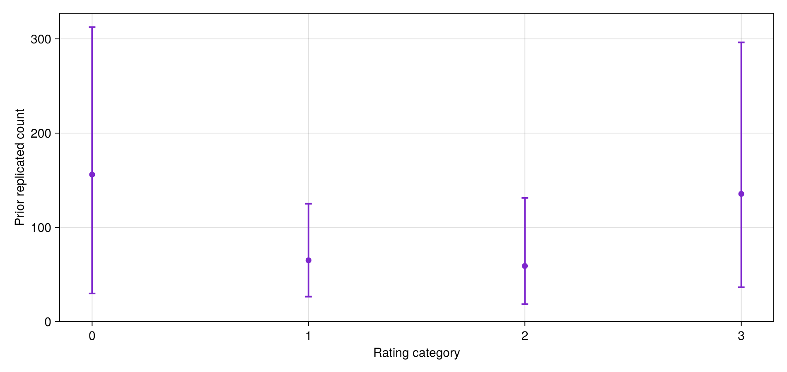
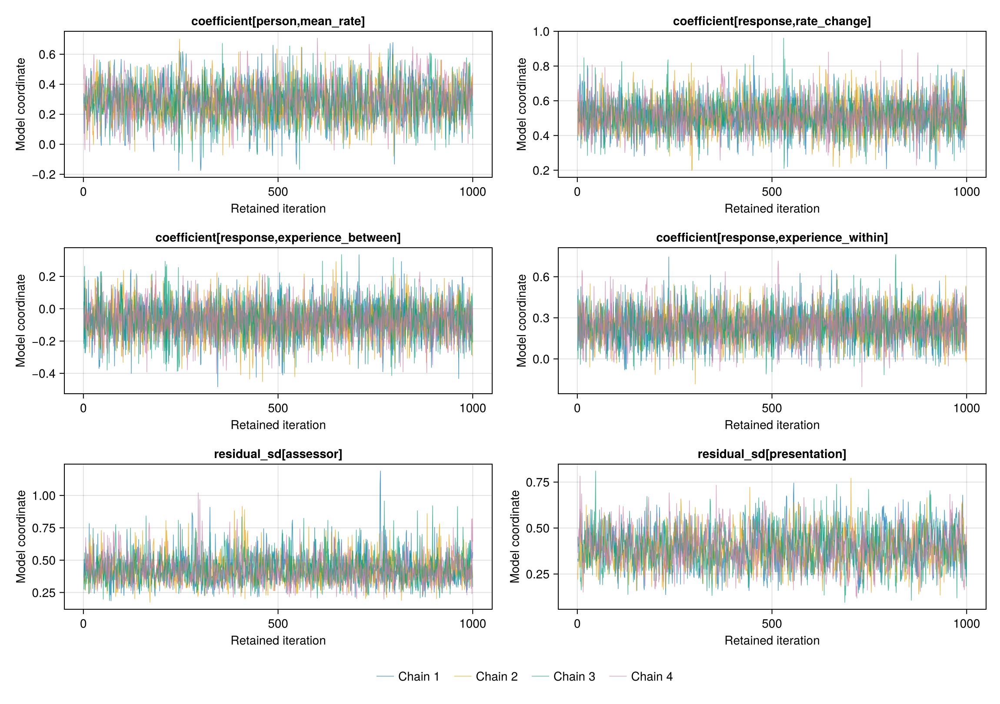
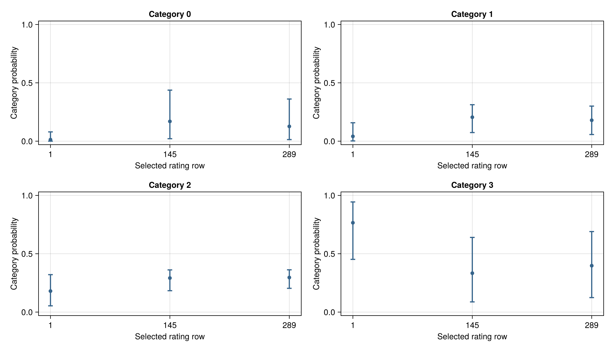
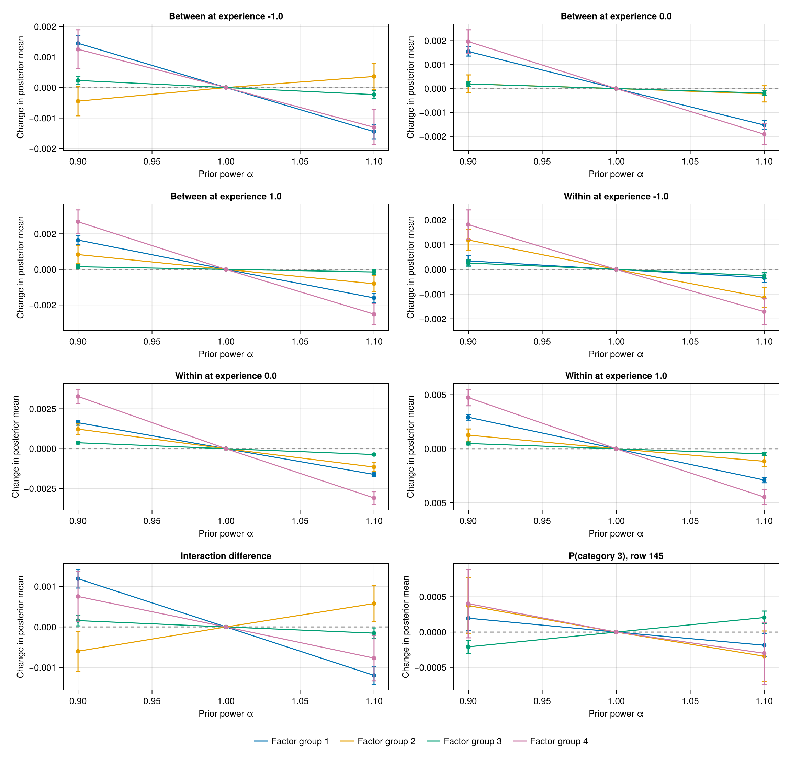
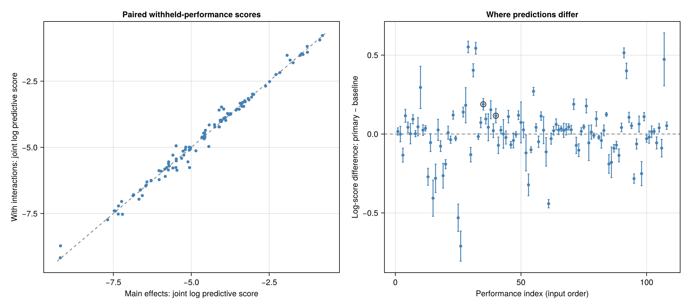

Check an Explanatory Rating Model
Do the priors produce plausible ratings? Did the chains explore consistently? Does the fitted model reproduce the data? These are separate questions. This page uses saved results from the repeated-performance moderation example. It starts no fitting or simulation.
Open the saved figures
using BayesianMGMFRM, CairoMakie, JSON3
using BayesianMGMFRM.GlassBox
using BayesianMGMFRM.Legacy
root = joinpath(pkgdir(BayesianMGMFRM), "examples", "reports", "explanatory-diagnostics")
hashes = JSON3.read(read(joinpath(root, "sha256.json"), String))
stored(name) = load_report(joinpath(root, name * ".json");
expected_sha256=hashes[name * ".json"])
BayesianMGMFRM.plot(stored("prior"); kind=:predictive)
BayesianMGMFRM.plot(stored("ppc"); kind=:predictive)
BayesianMGMFRM.plot(stored("trace"); kind=:diagnostics)
BayesianMGMFRM.plot(stored("prediction"); kind=:prediction)The prior and posterior reports use the same plotting verb; their stored type selects the correct interpretation and caption. Console notes are part of the figure: retain them when exporting. The artificial example has 36 people, 108 performances, 10 raters and 432 ratings.
Before conditioning on scores: prior predictions

Purple points and bars are medians and pointwise 95% intervals across 100 prior replicas at the declared design. They are not posterior estimates. Ask whether these ranges represent reasonable prior beliefs about category use. Broad ranges alone neither validate nor invalidate a prior. Mixed supports are displayed separately by steps owner; raw scores from different rubrics are not pooled.
After fitting: posterior predictions

Blue summaries use 500 posterior replicas; black diamonds are the observed statistics. Left: category counts. Right: each rater's mean. The bars are pointwise 95% predictive intervals for these statistics, conditional on observed owners. Agreement here can miss rate-dependent misfit and within-performance dependence. Predictive endpoint MCSE is unassessed for both prior and posterior checks.
Inspect chains alongside numerical diagnostics

Colors distinguish four chains; all 1,000 retained iterations per chain remain in their original order. Warmup is not shown. Apparent overlap cannot prove convergence. This example passes the declared numerical gates: maximum R̂ 1.0044, minimum bulk ESS 1,640, minimum tail ESS 2,218, E-BFMI .749–.925, and no retained divergences or depth hits. Twenty warmup divergences remain in telemetry. Check the actual focal interval precision as well; the 18 predeclared quantities passed here. Diagnostic success is separate from predictive fit and prior sensitivity.
Predict a category for a known rating row

Points are posterior mean probabilities; bars are pointwise 95% credible intervals for probabilities at rating rows 1, 145 and 289. These are not intervals for a future rating. The rows have different recorded people, performances, raters and attributes: differences between panels/rows are not causal effects of speaking rate. Row identifiers and attributes remain in selected_columns; probability MCSE remains in mcse. Diamonds, when present, mark structural zeros outside a row's support. New owners and changed stored owner attributes are not supported.
Use your own fit
With an existing explanatory result, select parameters explicitly for traces:
names = ["coefficient[person,mean_rate]", "coefficient[response,rate_change]"]
traces = fit_report(result; parameters=names, include_draws=true)
probabilities = predictive_probabilities(result; rows=[1, 2, 3])
receipt = save_report("trace-report.json", traces; return_receipt=true)
reopened = load_report(receipt.path; expected_sha256=receipt.sha256)
BayesianMGMFRM.plot(reopened; kind=:diagnostics)
BayesianMGMFRM.plot(probabilities; kind=:prediction)These operations reuse retained draws. By contrast, prior_predictive_check(spec; ndraws=100, seed=1) and predictive_check(result; ndraws=500, seed=2, groupby=:assessor) generate new replicas; save their returned reports before repeated plotting. Choose counts, priors and diagnostic precision for your own question, not by copying this example.
How much do the priors affect the answer?
Open the saved sensitivity calculation with the same stored helper:
BayesianMGMFRM.plot(stored("sensitivity"); kind=:prior_sensitivity)
Colors identify coefficient priors (group 1), residual-SD hyperpriors (2), step priors (3), and those three groups together (4). Points show changes in posterior means at α=.9,1,1.1; connecting lines guide the eye. Bars are ±2 paired-shift MCSE, not posterior credible intervals. Each panel has its own vertical scale; the last panel uses probability units. Between/within panels use logits per supplied rate unit, and the interaction difference uses logits per rate × experience unit. Small plotted shifts are not estimates of the effects themselves.
Here the largest absolute slope-mean shift is .00475, the interaction-difference shift .00120, and the selected probability shift .000403. All nonidentity cases pass the Pareto-k screen (maximum .161); weight ESS ranges from 3,962 to 3,999 of 4,000 draws. All focal mean-MCSE values are below .00304, meeting the declared .02 numerical bound. This is a local check of one artificial fit. It does not resolve the original interaction interval's failure to cover the generating value, establish empirical validity, or test every defensible prior. Quantile/decision precision and uncertainty from fitting the PSIS tail remain unassessed.
For your own saved explanatory fit, inspect the available factors before selecting:
factors = logprior(result; components=:factors)
[(f.id, f.role, f.measure, f.selectable) for f in factors.factors]
sensitivity = prior_sensitivity(result;
powers=["weaker" => (factors=["residual_sd[assessor]"], alpha=.9),
"baseline" => (factors=["residual_sd[assessor]"], alpha=1.),
"stronger" => (factors=["residual_sd[assessor]"], alpha=1.1)],
estimands=["Between-rate association" => "coefficient[person,mean_rate]"],
max_mean_mcse=.02)
BayesianMGMFRM.plot(sensitivity; kind=:prior_sensitivity)This reuses joint draws; it neither refits nor generates predictive replicas. Save the report with save_report and retain its receipt. An unreliable weight screen remains a gap in the plot and in the report, not evidence of robustness. Baseline convergence warnings are never cleared by reweighting.
Only declared top-level or fixed-scale factors are selectable. Conditional residual distributions with estimated SD and transformation Jacobians remain unchanged. For a positive-SD LogNormal(μ,s) prior, power α gives a normalized LogNormal(μ+(1−α)s²/α,s/√α): changing only the log-SD spread would answer a different question. This follows the selective hierarchical perturbation principle in Kallioinen et al. (2024), §§2.1–2.3. The returned factor definitions identify the measure explicitly.
Likelihood power scaling remains a separate unfinished operation. This prior-only screen does not diagnose prior-data conflict. The PCM sensitivity route has a different model contract.
Does adding the interactions improve predictions?
comparison = stored("comparison")
BayesianMGMFRM.plot(comparison; kind=:comparison)
comparison.difference, comparison.mcse
Here each predictive unit is all ratings of one performance. Its shared residual is integrated once; the speaker and assessors remain represented by other performances. Both models retain the observed predictor roster, main effects and common priors. The larger model adds experience × mean speed and experience × within-person speed deviation. This is one artificial dataset, not evidence about an empirical speaking population.
The total log predictive score difference is +0.713 for adding interactions; computational MCSE is 0.368 (block checks: 0.340 and 0.306). The difference does not clear the worked example's three-MCSE criterion: neither superiority nor equivalence is established. Bars are ±2 computational MCSE, not CrIs or population confidence intervals. Crossed-design sampling uncertainty remains unassessed. All five fits pass retained-draw diagnostics; their warmup warnings remain in the report and caption. This does not repair the original missed generating interaction difference.
For your own two saved explanatory fits, name the facet associated with your declared performance column (called presentation in this example):
larger = criteria(interaction_fit; unit=:performance, integrate=:presentation)
smaller = criteria(main_effect_fit; unit=:performance, integrate=:presentation)
larger.problem_performances, smaller.problem_performances
comparison = compare_models("Interactions" => larger, "Main effects" => smaller;
criterion=:psis_loo, independent_model_rng=true)
receipt = save_report("comparison.json", comparison; return_receipt=true)
reopened = load_report(receipt.path; expected_sha256=receipt.sha256)
BayesianMGMFRM.plot(reopened; kind=:comparison)Declare independent RNG streams only when you actually ran the models/refits independently. No estimate is automatically ranked. An unreliable profile remains diagnostic-only, and the total qualified MCSE becomes unavailable. In the supplied example, direct refits check performance 40 in both models and replace unstable PSIS for performance 35 in the smaller model. Black rings mark these contributions.
To prepare a needed refit, use plan = loo_refit_plan(result, id; unit=:performance, integrate=:presentation), then fit plan.target with explicit sampler settings. The plan preserves original predictor means/deviations and priors. Supply the saved fit with criteria(result; unit=:performance, integrate=:presentation, refits=[id => held_fit], independent_refit_rng=true). This never starts refitting automatically. Inspect all numerical diagnostics and choose useful precision for the question; mcse_blocks=(100,200) optionally checks PSIS tail-fit variability, with block sizes dividing iterations per chain. Neither those checks nor the observed predictor roster support prospective prediction with unknown covariates, new people or new assessors. Integration requires one iid performance facet; finite-sum-zero effects and performance-specific response coefficients needing additional integration are refused.